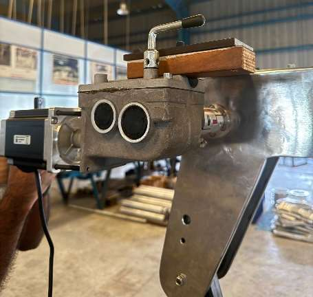

Mechatronics / Visual Education Aids
Manipulator arm integration
Mechanical and electrical integration for a remotely controlled manipulator arm.

CAD assembly from the supplied project report
Project overview
Explore the motorisation of a manual manipulator and its operator-control interface.
Approach
- Mechanical layout and CAD integration of motors, gearing and mounts.
- Stepper-motor and drive selection for the arm axes.
- Arduino pulse-and-direction control with wireless joystick input.

Engineering focus
Actuator selection, mechanical interfaces and remote operation.